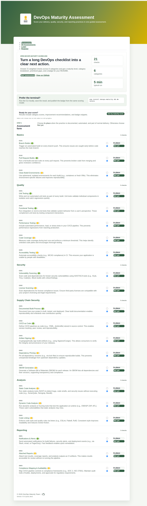
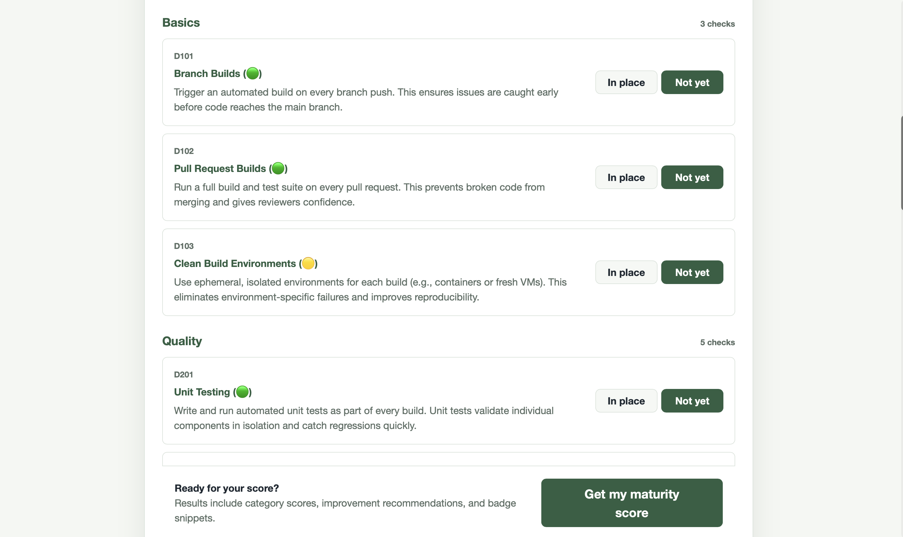
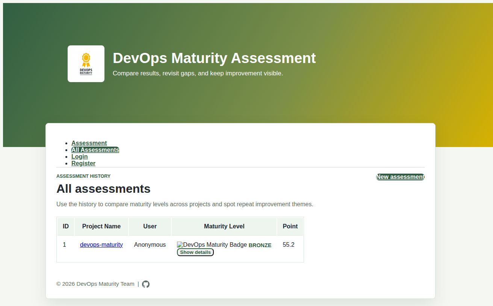

DevOps Maturity Assessment
A tool for turning broad DevOps, DevSecOps, and software supply‑chain expectations into a measurable score, a prioritised gap list, and a shareable badge.
DevOps Maturity Assessment evaluates your project against a standardised set of 20+ weighted criteria across six practice areas. It works from three entry points: an interactive CLI, a YAML config file, and an AI‑powered automated mode that reads your repository without any manual answers. A web interface is also available for teams who prefer a browser‑based workflow.
Features
- Interactive CLI — guided question‑and‑answer session in your terminal.
- YAML‑driven mode — reproducible baselines stored in source control and usable in CI pipelines.
- AI‑powered auto mode — let an LLM (OpenAI, Anthropic, Gemini, or local Ollama) inspect your repository and fill in the answers automatically.
- Web interface — browser‑based form with history, category breakdown, and improvement recommendations.
- Weighted scoring — criteria carry different weights; the final score is a percentage with a named level.
- Category breakdown — per‑area scores surface exactly where to improve first.
- README badge — one‑line Markdown snippet makes maturity visible to contributors and stakeholders.
- Assessment history — all runs are stored locally and comparable over time.
Installation
Prerequisite
Python 3.9 or later is required. You can check your version with:
python --versionInstall from PyPI
The recommended way to install the CLI is via pip:
pip install devops-maturityAfter installation, both devops-maturity and its short alias dm are available on your PATH.
dm --versionInstall for local web development
To run the web interface locally, clone the repository and use nox:
git clone https://github.com/devops-maturity/devops-maturity.git
cd devops-maturity
pip install nox
nox -s previewThen open http://127.0.0.1:8000 in your browser.
Quick Start
Run your first assessment in under a minute:
-
Install the package
pip install devops-maturity -
Run the assessment
dm assessYou will be asked a series of yes/no questions about your project's DevOps practices.
-
Review your results
After answering all questions you will see:
- An overall percentage score
- A maturity level —
WIP,PASSING,BRONZE,SILVER, orGOLD - Per‑category scores with a visual bar
- A prioritised list of missing practices
- A badge URL you can embed in your README
CLI — Interactive mode
Interactive mode walks you through every criterion with a yes/no prompt. It is the fastest way to get a baseline for any project, with no configuration files needed.
# Basic interactive assessment
dm assess
# Provide the project name upfront to skip the prompt
dm assess --project-name "my-api"
# Also attach a project URL to the saved record
dm assess --project-name "my-api" --project-url "https://github.com/org/my-api"At the end of the session, results are printed to the terminal and saved to the local SQLite database for history tracking.
CLI — YAML config mode
The config mode reads answers from a devops-maturity.yml file instead of prompting interactively.
Store this file in your repository so that assessments are versioned, reviewable in pull requests, and repeatable in CI.
# Uses devops-maturity.yml in the current directory by default
dm config
# Specify a custom file path
dm config --file path/to/my-baseline.yml
# Override the project name from the command line
dm config --file devops-maturity.yml --project-name "service-x"dm config step to your CI pipeline to track maturity score over time alongside each release.
See the YAML file example for the complete file format.
CLI — AI auto mode
Auto mode fetches your repository's file tree, README, and CI/CD configuration from the hosting platform, then sends that context to an AI model to fill in the assessment answers automatically — no manual prompts required.
Supported AI providers
OpenAI
GPT‑4o and other OpenAI models. Requires an API key.
Anthropic
Claude models. Requires an API key.
Google Gemini
Gemini models. Requires an API key.
Ollama
Local models such as Llama 3. No API key needed.
Usage
# OpenAI (provider auto-detected from the git remote URL)
OPENAI_API_KEY=sk-... dm assess --auto --ai openai
# Specify a model explicitly
OPENAI_API_KEY=sk-... dm assess --auto --ai openai --model gpt-4o
# Anthropic
ANTHROPIC_API_KEY=... dm assess --auto --ai anthropic --model claude-3-5-sonnet-20241022
# Google Gemini
GEMINI_API_KEY=... dm assess --auto --ai gemini
# Ollama (runs locally, no API key needed)
dm assess --auto --ai ollama --model llama3
# Private repository — pass a token so the tool can read repo context
GITHUB_TOKEN=ghp_... dm assess --auto --ai openai--provider flag (github / gitlab / bitbucket) is auto‑detected from the origin remote URL of the current git repository. Public repositories do not require a token.
Web interface
The web interface provides the same assessment workflow in a browser‑based form, with built‑in history tracking and visual reports.
Starting the web app
git clone https://github.com/devops-maturity/devops-maturity.git
cd devops-maturity
pip install nox
nox -s previewOpen http://127.0.0.1:8000 in your browser.
Workflow
- Register or log in (username/password, or Google / GitHub OAuth if configured).
- Open the Assessment tab and enter your project name and URL.
- For each criterion, select In place or Not yet.
- Submit the form to see your maturity score, level, category breakdown, and improvement priorities.
- Visit All Assessments to compare runs and edit historical entries.
Screenshots

Assessment home — enter project details and answer criteria

Assessment result — score, level, category breakdown, and recommendations

Assessment history — compare all past runs for a project
Example: terminal output
Below is an example of what the CLI prints after a completed assessment:
Your score: 72.5%
Your maturity level: SILVER
Badge URL: https://img.shields.io/badge/DevOps%20Maturity-SILVER-silver.svg
Category Breakdown:
Basics [████████████████░░░░] 80%
Quality [████████████░░░░░░░░] 60%
Security [████████████████░░░░] 80%
Supply Chain Security [████████████░░░░░░░░] 60%
Analysis [████████░░░░░░░░░░░░] 40%
Reporting [████████████████░░░░] 80%
Improvement Recommendations:
Quality:
[D203] Performance Testing (🟡)
Include automated performance, load, or stress tests in your CI/CD pipeline.
[D205] Accessibility Testing (🟡)
Automate accessibility checks (e.g., WCAG compliance) in CI.
Analysis:
[D501] Static Code Analysis (🟡)
Run static analysis tools (SAST) to detect bugs, code smells, and security issues.
[D502] Dynamic Code Analysis (🟡)
Run dynamic analysis or fuzzing tools that test the application at runtime.
Next steps:
1. Commit a devops-maturity.yml baseline for repeatable reviews.
2. Add the Markdown badge to your README to make progress visible.
3. Re-run the assessment after improving the missing practices.Example: YAML config file
Create a devops-maturity.yml file in your repository root and commit it.
Each key is a criterion ID; set it to true if the practice is in place or false if it is not.
project_name: my-api
project_url: https://github.com/org/my-api
# Basics
D101: true # Branch Builds
D102: true # Pull Request Builds
D103: false # Clean Build Environments
# Quality
D201: true # Unit Testing
D202: true # Functional Testing
D203: false # Performance Testing
D204: true # Code Coverage
D205: false # Accessibility Testing
# Security
D301: true # Vulnerability Scanning
D302: false # License Scanning
# Supply Chain Security
D401: true # Documented Build Process
D402: true # CI/CD as Code
D403: false # Artifact Signing
D404: true # Dependency Pinning
D405: false # SBOM Generation
# Analysis
D501: false # Static Code Analysis
D502: false # Dynamic Code Analysis
D503: true # Code Linting
# Reporting
D601: true # Notifications & Alerts
D602: false # Attached Reports
D603: false # Compliance Mapping & AuditabilityRun the assessment against this file:
dm config --file devops-maturity.ymlExample: adding a badge to your README
After every assessment the CLI prints a badge URL and a ready‑to‑paste Markdown snippet. Add it to your project README to make the maturity level visible to contributors and stakeholders.
[](https://devops-maturity.github.io/)The badge level updates automatically each time you re‑run the assessment and push a new badge URL.
You can also add the specification badge to indicate your project follows the DevOps Maturity Specification:
[](https://devops-maturity.github.io/)Assessment criteria
The tool evaluates 20 criteria across six categories. Each criterion has a weight: Required (1.0) criteria carry full weight; Recommended (0.5) criteria carry half weight.
Basics
| ID | Criterion | Weight | Description |
|---|---|---|---|
| D101 | Branch Builds | Required | Trigger an automated build on every branch push to catch issues before they reach main. |
| D102 | Pull Request Builds | Required | Run a full build and test suite on every pull request to prevent broken code from merging. |
| D103 | Clean Build Environments | Recommended | Use ephemeral, isolated environments (e.g., containers) for reproducible builds. |
Quality
| ID | Criterion | Weight | Description |
|---|---|---|---|
| D201 | Unit Testing | Required | Automated unit tests validate individual components and catch regressions quickly. |
| D202 | Functional Testing | Required | Integration or end-to-end tests validate system behaviour from a user's perspective. |
| D203 | Performance Testing | Recommended | Automated load/stress tests prevent performance regressions from reaching production. |
| D204 | Code Coverage | Recommended | Measure coverage and enforce a minimum threshold to identify untested code paths. |
| D205 | Accessibility Testing | Recommended | Automate WCAG compliance checks in CI to ensure usability for all users. |
Security
| ID | Criterion | Weight | Description |
|---|---|---|---|
| D301 | Vulnerability Scanning | Required | Scan code and dependencies for known vulnerabilities using SAST/SCA tools (e.g., Snyk, CodeQL). |
| D302 | License Scanning | Recommended | Ensure third-party dependency licences are compatible with your project's requirements. |
Supply Chain Security
| ID | Criterion | Weight | Description |
|---|---|---|---|
| D401 | Documented Build Process | Required | Document how your project is built, tested, and deployed for reproducibility and onboarding. |
| D402 | CI/CD as Code | Required | Define pipelines as code (e.g., YAML, Jenkinsfile) stored in version control. |
| D403 | Artifact Signing | Recommended | Cryptographically sign build artifacts (e.g., Sigstore/Cosign) to verify integrity. |
| D404 | Dependency Pinning | Recommended | Pin all dependency versions via lock files to ensure reproducible builds. |
| D405 | SBOM Generation | Recommended | Generate a Software Bill of Materials (SBOM) for each release for transparency and compliance. |
Analysis
| ID | Criterion | Weight | Description |
|---|---|---|---|
| D501 | Static Code Analysis | Recommended | Run SAST tools (e.g., SonarQube, Semgrep) to detect bugs and security issues without executing code. |
| D502 | Dynamic Code Analysis | Recommended | Run DAST or fuzzing tools at runtime (e.g., OWASP ZAP) to catch vulnerabilities static analysis may miss. |
| D503 | Code Linting | Recommended | Enforce code style and quality rules via linters (e.g., ESLint, Flake8, Ruff) to reduce review friction. |
Reporting
| ID | Criterion | Weight | Description |
|---|---|---|---|
| D601 | Notifications & Alerts | Required | Send automated notifications for build failures and security alerts (e.g., Slack, email, PagerDuty). |
| D602 | Attached Reports | Recommended | Attach test results, coverage reports, and analysis outputs as CI artifacts for review. |
| D603 | Compliance Mapping & Auditability | Recommended | Map pipeline controls to frameworks (e.g., SOC 2, ISO 27001) and maintain audit trails. |
Maturity levels
The overall score (0–100 %) maps to one of five named levels:
| Level | Score range | Meaning |
|---|---|---|
| WIP | 0 – 39 % | Foundational practices are not yet in place. Focus on the Required criteria first. |
| PASSING | 40 – 59 % | Core required practices are covered. Begin adopting Recommended criteria. |
| BRONZE | 60 – 74 % | Good baseline. Recommended practices are partially in place. |
| SILVER | 75 – 89 % | Strong DevOps posture. Most practices are in place. |
| GOLD | 90 – 100 % | Comprehensive coverage of all practices across every category. |
Configuration
Environment variables
The CLI reads the following environment variables as fallbacks when flags are not provided:
| Variable | Used for |
|---|---|
OPENAI_API_KEY | OpenAI API key for AI auto mode |
ANTHROPIC_API_KEY | Anthropic API key for AI auto mode |
GEMINI_API_KEY | Google Gemini API key for AI auto mode |
GITHUB_TOKEN | GitHub personal access token for private repos |
GITLAB_TOKEN | GitLab personal access token for private repos |
BITBUCKET_TOKEN | Bitbucket access token for private repos |
OAuth for the web interface (optional)
The web interface supports Google and GitHub OAuth in addition to username/password login.
- Copy the example environment file:
cp .env.example .env -
Google OAuth — create credentials in Google Cloud Console with redirect URI
http://localhost:8000/auth/callback/google, then addGOOGLE_CLIENT_IDandGOOGLE_CLIENT_SECRETto.env. -
GitHub OAuth — create an OAuth app in GitHub Developer Settings with callback URL
http://localhost:8000/auth/callback/github, then addGITHUB_CLIENT_IDandGITHUB_CLIENT_SECRETto.env.
CLI flags reference
dm assess — all flags
| Flag | Env var fallback | Default | Description |
|---|---|---|---|
--project-name, -p | — | Prompted | Project name for the saved record |
--project-url, -u | — | — | Project URL for the saved record |
--auto | — | off | Enable AI-powered automated assessment |
--ai | — | — | AI provider: openai, anthropic, gemini, ollama |
--model | — | Provider default | Model name (e.g., gpt-4o) |
--provider | — | Auto-detected | Repo platform: github, gitlab, bitbucket |
--repo-token | GITHUB_TOKEN / GITLAB_TOKEN / BITBUCKET_TOKEN | — | Token for private repository access |
--ai-key | OPENAI_API_KEY / ANTHROPIC_API_KEY / GEMINI_API_KEY | — | AI provider API key |
--ollama-url | — | http://localhost:11434 | Ollama server base URL |
--version | — | — | Print the installed version and exit |
dm config — all flags
| Flag | Default | Description |
|---|---|---|
--file, -f | devops-maturity.yml | Path to the YAML baseline file |
--project-name, -p | From YAML / default | Override the project name |
--project-url, -u | From YAML | Override the project URL |
dm list
Prints all assessments stored in the local database, showing ID, project name, and raw responses.
dm list